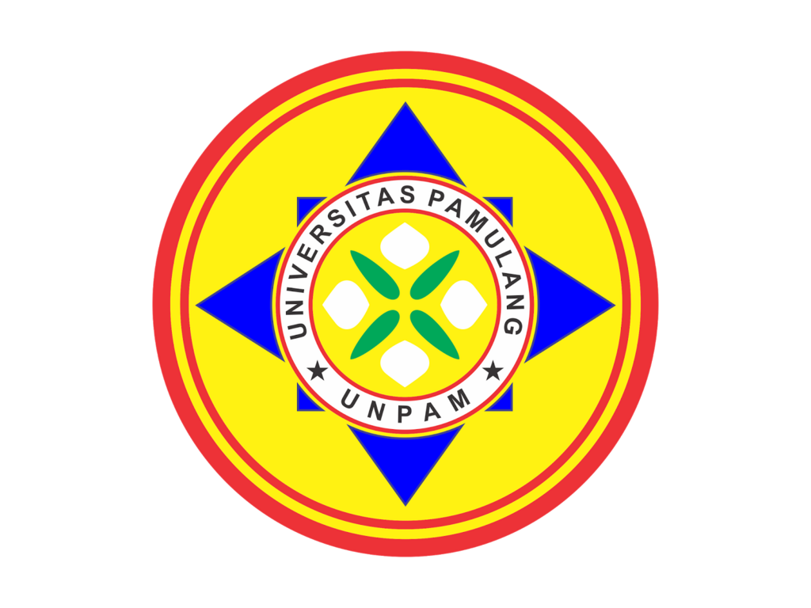

(DOSEN DESSY SETIAWATI)

DISUSUN OLEH KELOMPOK 2 :
1. ALKA PRASETYA / 251012602963
2. BUNGA RIZKA ILVIA / 251012603003
3. NOVALDO / 251012601881
4. RIZKIA KURNIAWAN PUTRA / 251012603051
Pancasila merupakan dasar negara sekaligus pandangan hidup bangsa Indonesia.
Sistem Etika berarti kumpulan nilai moral yang tersusun secara logis, sistematis, dan saling berkaitan.
Etika tidak hanya memberi penilaian, tetapi juga menjadi pedoman praktis bagi perilaku manusia.
Pancasila tidak hanya dasar negara, tetapi juga landasan etika bangsa. Tiap sila memuat nilai moral yang universal.
Merupakan tiga lapisan dari Pancasila.
Pancasila adalah pedoman dalam mengambil keputusan moral sehari-hari.
Contoh:
tradisi kerja bakti di desa, musyawarah warga, atau gerakan bantuan sosial saat bencana alam semua mencerminkan etika sosial Pancasila.
Etika politik berhubungan dengan kekuasaan, pemerintahan, dan kebijakan. Pancasila menjadi kontrol moral agar politik tidak menyimpang.
Meski ideal, penerapan Pancasila menghadapi hambatan nyata.
Munculnya krisis moral, rendahnya integritas publik, hingga ketidakadilan sosial.